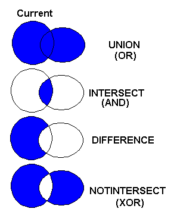

A complex region can composed of boxes, sectors, chords, polygons and texts. It is implemented only in the Windows GDI, Windows GDI+, GDK, Cairo(*), and X-Windows base drivers.
Complex clipping regions can be created using cdBegin(CD_REGION)/(filled primtives)/.../cdEnd(). For more about cdBegin and cdEnd see Polygons.
Between a cdBegin(CD_REGION) and a cdEnd(), all calls to cdBox, cdSector, cdChord, cdBegin(CD_FILL)/cdVertex(x,y)/.../cdEnd() and cdText will be composed in a region for clipping. This is the only exception when you can call a cdBegin after another cdBegin.
When you call cdBegin(CD_REGION) a new empty region will be created. So for the first operation you should use CD_UNION or CD_NOTINTERSECT combine modes. When you finished to compose the region call cdEnd().
To make the region active you must call cdClip(CD_CLIPREGION). For other clipping regions see Clipping.
Although Cairo is capable of creating regions, you can not use them for clipping, just to use IsPointInRegion. And it can create only rectangle based regions, i.e. only cdBox will actually combine rectangles into the region.
Complex clipping regions are not saved by cdSaveState.
int cdCanvasRegionCombineMode(cdCanvas* canvas, int mode); [in C]
canvas:RegionCombineMode(mode: number) -> (old_mode: number) [in Lua]
Changes the way regions are combined when created. Returns the previous status. Values: CD_UNION, CD_INTERSECT, CD_DIFFERENCE or CD_NOTINTERSECT. The value CD_QUERY simply returns the current status. Default value: CD_UNION.
Combine Modes

int cdCanvasIsPointInRegion(cdCanvas* canvas, int x, int y); [in C]
int wdCanvasIsPointInRegion(cdCanvas* canvas, double x, double y); (WC) [in C]
canvas:IsPointInRegion(x, y: number) -> (status: boolean) [in Lua]
canvas:wIsPointInRegion(x, y: number) -> (status: boolean) [in Lua]
Returns a non zero value if the point is contained inside the current region.
void cdCanvasOffsetRegion(cdCanvas* canvas, int dx, int dy); [in C]
void wdCanvasOffsetRegion(cdCanvas* canvas, double dx, double dy); (WC) [in C]
canvas:OffsetRegion(dx, dy: number) [in Lua]
canvas:wOffsetRegion(dx, dy: number) (WC) [in Lua]
Moves the current region by the given offset. In X-Windows, if the region moves to outside the canvas border, the part moved outside will be lost, the region will need to be reconstructed.
void cdCanvasGetRegionBox(cdCanvas* canvas, int *xmin, int *xmax, int *ymin, int *ymax); [in C]
void wdCanvasGetRegionBox(cdCanvas* canvas, double *xmin, double *xmax, double *ymin, double *ymax); (WC) [in C]
canvas:GetRegionBox() -> (xmin, xmax, ymin, ymax, status: number) [in Lua]
canvas:wGetRegionBox() -> (xmin, xmax, ymin, ymax, status: number) (WC) [in Lua]
Returns the rectangle of the bounding box of the current region. It is not necessary to provide all return pointers, you can provide only the desired values and NULL for the others.